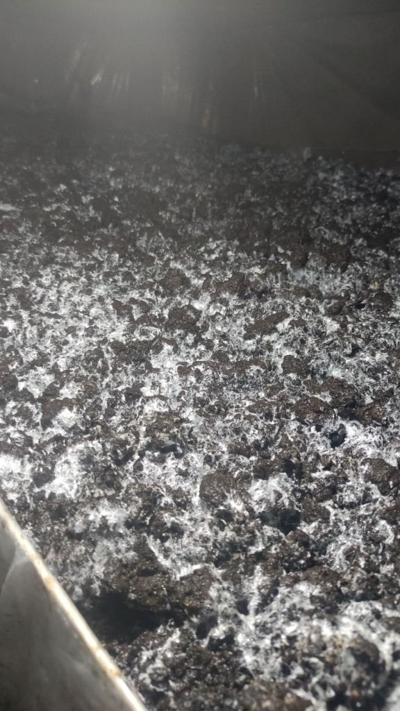
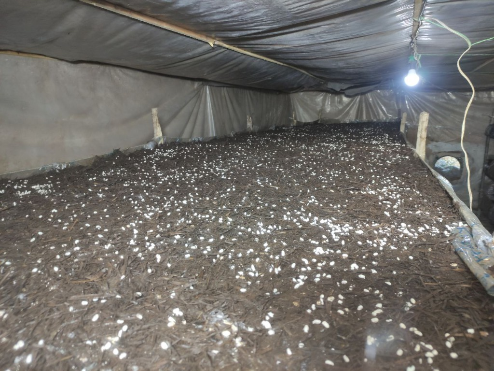

پرورش قارچ یک فرآیند حساس است که نیاز به دقت بسیار بالایی در کنترل دما، رطوبت و دیاکسید کربن دارد. مراحل اصلی عبارتند از:
۱. اسپاونران (Spawn Run)
پس از بذر زنی در کمپوست، حدود ۱۴ الی ۱۷ روز طول میکشد تا میسلیومهای قارچ در تمام بستر رشد کنند. در این مرحله دما باید حدود ۲۵ درجه سانتیگراد حفظ شود.
۲. خاکدهی (Casing)
وقتی تمام کمپوست سفید شد، لایهای از خاک پوششی پاستوریزه روی آن قرار میگیرد. خاک پوششی ورگا به دلیل ظرفیت نگهداری آب بالا، بهترین گزینه برای این مرحله است.
۳. کیسران (Case Run)
در این مرحله میسلیومها از کمپوست وارد خاک پوششی میشوند. این مرحله حدود ۵ الی ۷ روز زمان میبرد.
۴. رافلینگ (Ruffling)
برای یکنواخت شدن رشد و هوادهی بهتر، سطح خاک را به آرامی کمی خراش میدهند که به آن رافلینگ میگوییم.
۵. شوکدهی (Shocking)
با کاهش ناگهانی دمای سالن و هوادهی شدید، میسلیومها از حالت رویشی به زایشی تغییر فاز میدهند و گرههای اولیه قارچ (Pinhead) ظاهر میشوند.
۶. رشد و باردهی
قارچها شروع به رشد سریع میکنند. در این فاز کنترل رطوبت هوا بسیار حساس است تا کلاهک قارچها زرد یا لکدار نشود.
۷. برداشت (Picking)
در نهایت قارچها در ۳ یا ۴ مرحله (که به آن فلش میگوییم) برداشت میشوند. فاصله بین هر فلش حدود یک هفته است.